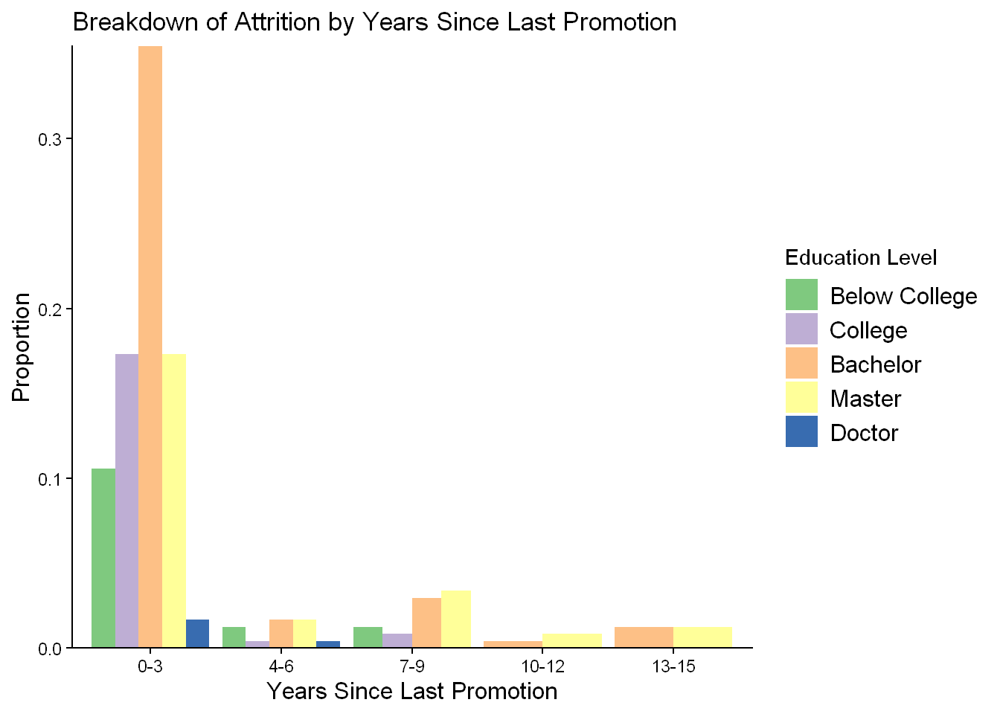

# Load necessary packages
library(tidyverse)
library(ggplot2)
library(janitor)Employee Attrition Exploration & Analyses
A People Analytics Practice Project
Setup
Importing Data
# Load the dataset
hr_data <- read_csv("data/WA_Fn-UseC_-HR-Employee-Attrition.csv")Initial Inspection
# Examining an overview of the dataset
glimpse(hr_data)Rows: 1,470
Columns: 35
$ Age <dbl> 41, 49, 37, 33, 27, 32, 59, 30, 38, 36, 35, 2…
$ Attrition <chr> "Yes", "No", "Yes", "No", "No", "No", "No", "…
$ BusinessTravel <chr> "Travel_Rarely", "Travel_Frequently", "Travel…
$ DailyRate <dbl> 1102, 279, 1373, 1392, 591, 1005, 1324, 1358,…
$ Department <chr> "Sales", "Research & Development", "Research …
$ DistanceFromHome <dbl> 1, 8, 2, 3, 2, 2, 3, 24, 23, 27, 16, 15, 26, …
$ Education <dbl> 2, 1, 2, 4, 1, 2, 3, 1, 3, 3, 3, 2, 1, 2, 3, …
$ EducationField <chr> "Life Sciences", "Life Sciences", "Other", "L…
$ EmployeeCount <dbl> 1, 1, 1, 1, 1, 1, 1, 1, 1, 1, 1, 1, 1, 1, 1, …
$ EmployeeNumber <dbl> 1, 2, 4, 5, 7, 8, 10, 11, 12, 13, 14, 15, 16,…
$ EnvironmentSatisfaction <dbl> 2, 3, 4, 4, 1, 4, 3, 4, 4, 3, 1, 4, 1, 2, 3, …
$ Gender <chr> "Female", "Male", "Male", "Female", "Male", "…
$ HourlyRate <dbl> 94, 61, 92, 56, 40, 79, 81, 67, 44, 94, 84, 4…
$ JobInvolvement <dbl> 3, 2, 2, 3, 3, 3, 4, 3, 2, 3, 4, 2, 3, 3, 2, …
$ JobLevel <dbl> 2, 2, 1, 1, 1, 1, 1, 1, 3, 2, 1, 2, 1, 1, 1, …
$ JobRole <chr> "Sales Executive", "Research Scientist", "Lab…
$ JobSatisfaction <dbl> 4, 2, 3, 3, 2, 4, 1, 3, 3, 3, 2, 3, 3, 4, 3, …
$ MaritalStatus <chr> "Single", "Married", "Single", "Married", "Ma…
$ MonthlyIncome <dbl> 5993, 5130, 2090, 2909, 3468, 3068, 2670, 269…
$ MonthlyRate <dbl> 19479, 24907, 2396, 23159, 16632, 11864, 9964…
$ NumCompaniesWorked <dbl> 8, 1, 6, 1, 9, 0, 4, 1, 0, 6, 0, 0, 1, 0, 5, …
$ Over18 <chr> "Y", "Y", "Y", "Y", "Y", "Y", "Y", "Y", "Y", …
$ OverTime <chr> "Yes", "No", "Yes", "Yes", "No", "No", "Yes",…
$ PercentSalaryHike <dbl> 11, 23, 15, 11, 12, 13, 20, 22, 21, 13, 13, 1…
$ PerformanceRating <dbl> 3, 4, 3, 3, 3, 3, 4, 4, 4, 3, 3, 3, 3, 3, 3, …
$ RelationshipSatisfaction <dbl> 1, 4, 2, 3, 4, 3, 1, 2, 2, 2, 3, 4, 4, 3, 2, …
$ StandardHours <dbl> 80, 80, 80, 80, 80, 80, 80, 80, 80, 80, 80, 8…
$ StockOptionLevel <dbl> 0, 1, 0, 0, 1, 0, 3, 1, 0, 2, 1, 0, 1, 1, 0, …
$ TotalWorkingYears <dbl> 8, 10, 7, 8, 6, 8, 12, 1, 10, 17, 6, 10, 5, 3…
$ TrainingTimesLastYear <dbl> 0, 3, 3, 3, 3, 2, 3, 2, 2, 3, 5, 3, 1, 2, 4, …
$ WorkLifeBalance <dbl> 1, 3, 3, 3, 3, 2, 2, 3, 3, 2, 3, 3, 2, 3, 3, …
$ YearsAtCompany <dbl> 6, 10, 0, 8, 2, 7, 1, 1, 9, 7, 5, 9, 5, 2, 4,…
$ YearsInCurrentRole <dbl> 4, 7, 0, 7, 2, 7, 0, 0, 7, 7, 4, 5, 2, 2, 2, …
$ YearsSinceLastPromotion <dbl> 0, 1, 0, 3, 2, 3, 0, 0, 1, 7, 0, 0, 4, 1, 0, …
$ YearsWithCurrManager <dbl> 5, 7, 0, 0, 2, 6, 0, 0, 8, 7, 3, 8, 3, 2, 3, …Cleaning
# Standardized column names
hr_data <- janitor::clean_names(hr_data) %>%
# Removed standardized columns and irrelevant variables to following analyses
select(-any_of(c("employee_count", "standard_hours", "over18")))
hr_data <- hr_data %>%
# Convert appropriate variables into ordinal factors
mutate(job_involvement = factor(job_involvement,
levels = 1:4,
labels = c("Low", "Medium", "High", "Very High")),
job_satisfaction = factor(job_satisfaction,
levels = 1:4,
labels = c("Low", "Medium", "High", "Very High")),
education = factor(education,
levels = 1:5,
labels = c("Below College", "College",
"Bachelor", "Master", "Doctor"))
) %>%
# Convert appropriate variables into nominal factors
mutate(across(c(attrition, business_travel, department, education_field,
gender, job_role, marital_status, over_time), as.factor))Analyses
# Created a new table highlighting employees who attrited, selecting some specific variables
attrition_data <- hr_data %>%
filter(attrition == "Yes") %>%
select(employee_number, distance_from_home, education, environment_satisfaction,
job_involvement, job_level, job_satisfaction,
num_companies_worked:last_col())(RENAME) Education Insights (RENAME)
# Created a new table to gain insight on employees based on their education level
education_data <- attrition_data %>%
select(employee_number, education:job_satisfaction, percent_salary_hike,
total_working_years, years_at_company:years_since_last_promotion)
# Finding which level of education has had the highest attrition rate
ed_df <- hr_data %>%
group_by(education) %>%
summarize(attrition_rate = round((mean(attrition == "Yes")) * 100, 2))
# Displaying the attrition rates of each education level
knitr::kable(ed_df)| education | attrition_rate |
|---|---|
| Below College | 18.24 |
| College | 15.60 |
| Bachelor | 17.31 |
| Master | 14.57 |
| Doctor | 10.42 |
As seen, the education level with the highest rate of attrition was the employees who had a “Below College” level, with a rate of 18.24%. Conversely, the education level with the lowest rate of attrition was the employees with a “Doctor” level education, with a rate of 10.42%.
Graph of Breakdown by Years Since Last Promotion
promo_graph_count <- education_data %>%
mutate(years_bucket = cut(years_since_last_promotion,
breaks = c(0, 3, 6, 9, 12, 15),
labels = c("0-3", "4-6", "7-9", "10-12", "13-15"),
include.lowest = TRUE)) %>%
ggplot(aes(years_bucket,
fill = education)) +
scale_x_discrete("Years Since Last Promotion") +
scale_y_continuous("Count", expand = c(0,0)) +
geom_bar(position = "dodge") +
labs(title = "Breakdown of Attrition by Years Since Last Promotion",
fill = "Education Level") +
theme_classic() +
theme(
axis.title = element_text(size = 12),
legend.text = element_text(size = 12)) +
scale_fill_brewer(palette = "Accent")
promo_graph_countGraph displaying count above, graph displaying proportion below
Code
promo_prop_df <- education_data %>%
mutate(years_bucket = cut(years_since_last_promotion,
breaks = c(0, 3, 6, 9, 12, 15),
labels = c("0-3", "4-6", "7-9", "10-12", "13-15"),
include.lowest = TRUE)) %>%
count(years_bucket, education)
knitr::kable(promo_prop_df)| years_bucket | education | n |
|---|---|---|
| 0-3 | Below College | 25 |
| 0-3 | College | 41 |
| 0-3 | Bachelor | 84 |
| 0-3 | Master | 41 |
| 0-3 | Doctor | 4 |
| 4-6 | Below College | 3 |
| 4-6 | College | 1 |
| 4-6 | Bachelor | 4 |
| 4-6 | Master | 4 |
| 4-6 | Doctor | 1 |
| 7-9 | Below College | 3 |
| 7-9 | College | 2 |
| 7-9 | Bachelor | 7 |
| 7-9 | Master | 8 |
| 10-12 | Bachelor | 1 |
| 10-12 | Master | 2 |
| 13-15 | Bachelor | 3 |
| 13-15 | Master | 3 |
Code
promo_graph_prop <- promo_prop_df %>%
mutate(prop = n / sum(n)) %>%
ggplot(aes(years_bucket,
prop,
fill = education)) +
scale_x_discrete("Years Since Last Promotion") +
scale_y_continuous("Proportion", expand = c(0,0)) +
geom_col(position = "dodge") +
labs(title = "Breakdown of Attrition by Years Since Last Promotion",
fill = "Education Level") +
theme_classic() +
theme(
axis.title = element_text(size = 12),
legend.text = element_text(size = 12)) +
scale_fill_brewer(palette = "Accent")
promo_graph_prop